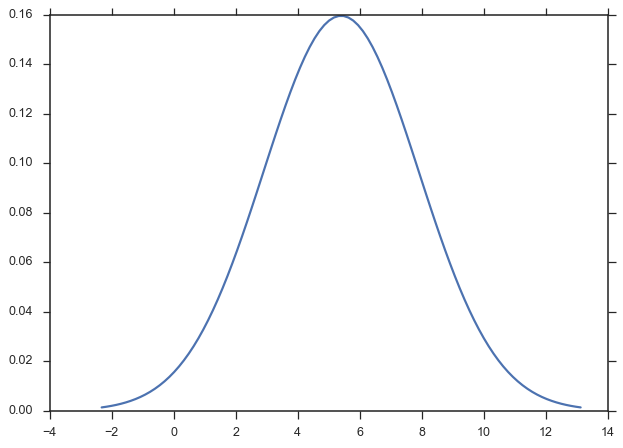
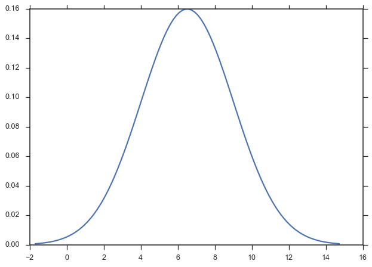

Paramnormal Activity¶
-
paramnormal.activity.random(distro, **params)[source]¶ Generate random data from a probability distribution.
Parameters: distro : str or paramnormal class
The distribution from which the random data will be generated.
params : keyword arguments of floats
The parameters required to define the distribution. See each distribution’s docstring for more info.
shape : int or tuple of ints, optional
The shape of the array into which the generated data will be placed. If None, a scalar will be retured.
Returns: random : numpy.array or scalar
The random array (or scalar) generated.
Examples
>>> import numpy >>> import paramnormal >>> numpy.random.seed(0) >>> # define dist with a string >>> paramnormal.activity.random('normal', mu=5, sigma=1.75, shape=1) array([ 8.08709161]) >>> # or you can specify the actual class >>> paramnormal.activity.random(paramnormal.normal, mu=5, sigma=1.75, shape=None) 5.700275114642641 >>> # greek letters still work >>> paramnormal.activity.random('beta', α=2.5, β=1.2, shape=(3,3)) array([[ 0.43771761, 0.84131634, 0.4390664 ], [ 0.7037142 , 0.88282672, 0.09080825], [ 0.98747135, 0.63227551, 0.98108498]])
-
paramnormal.activity.fit(distro, data, as_params=True, **guesses)[source]¶ Estimate the distribution parameters of sample data.
Parameters: distro : str or paramnormal class
The distribution from which the random data will be generated.
data : array-like
The data from which the distribution will be fit.
guesses : named arguments of floats
Inital guess values for certain parameters of the distribution. See the class docstring for more information on the parameters.
Returns: params : namedtuple
A namedtuple containing all of the paramaters of the distribution.
Examples
>>> import numpy >>> import paramnormal >>> numpy.random.seed(0) >>> x = numpy.random.normal(loc=5.75, scale=2.25, size=37) >>> paramnormal.activity.fit('normal', x) params(mu=6.4790576880446782, sigma=2.4437818960405617)
>>> paramnormal.activity.fit('normal', x, sigma=2) params(mu=6.4790576880446782, sigma=2)
-
paramnormal.activity.plot(distro, which='PDF', data=None, fit_dist=True, ax=None, pad=0.05, xscale='linear', line_opts=None, **guesses)[source]¶ Plot the PDF of a dataset and other representations of the distribution (histogram, kernel density estimate, and rug plot).
Parameters: distro : str or distribution
The (name of) the distribution to be plotted.
data : array-like, optional
An array-like object that can be passed to
distplot()andfit().fit_dist : bool, optional
Toggles fitting
distrotodata. If False,distromust be a fully specified distribution so that the PDF can be plotted.ax : matplotlib.Axes, optional
Axes on which the everything gets drawn. If not provided, a new one is created.
pad : float, optional
The fraction of beyond min and max values of data where the PDF will be drawn.
xscale : str, optional
Specfifies a ‘log’ or ‘linear’ scale on the plot.
line_opts : dict, optional
Plotting options passed to
plot()when drawing the PDF.distplot : bool, Optional
Toggles the use of
distplot(). The default is False.distplot_opts : dict, optional
Dictionary of parameters to be passed to
distplot().guesses : keyword arguments, optional
Additional parameters for specifying the distribution.
Returns: ax : matplotlib.Axes
See also
seaborn.distplotExamples
Plot a simple PDF of a fully-specified normal distribution.
>>> import numpy >>> import seaborn >>> import paramnormal >>> clean_bkgd = {'axes.facecolor': 'none', 'figure.facecolor': 'none'} >>> seaborn.set(style='ticks', rc=clean_bkgd) >>> norm_dist = paramnormal.normal(μ=5.4, σ=2.5) >>> ax = paramnormal.activity.plot(norm_dist)Pass a data sample to fit the distribution on-the-fly.
>>> paramnormal.utils.seed(0) >>> data = paramnormal.activity.random('normal', μ=5.4, σ=2.5, shape=(37)) >>> ax = paramnormal.activity.plot('normal', data=data)Use seaborn to show other representations of the distribution of real data:
>>> ax = paramnormal.activity.plot('normal', data=data, distplot=True) >>> ax.legend(loc='upper left')
Use
line_optsanddistplot_optsto customize more complex plots.>>> paramnormal.utils.seed(0) >>> data = paramnormal.activity.random('lognormal', μ=0.75, σ=1.2, shape=125) >>> logdata = numpy.log10(data) >>> line_opts = dict(color='firebrick', lw=3.5, label='Fit PDF') >>> distplot_opts = dict(rug=True, kde=False, norm_hist=True) >>> ax = paramnormal.activity.plot('lognormal', data=data, distplot=True, ... xscale='log', pad=0.01, ... line_opts=line_opts, ... distplot_opts=distplot_opts)Notice that the bins in log-space don’t work so well. We can compute them outselves.
>>> paramnormal.utils.seed(0) >>> data = paramnormal.activity.random('lognormal', μ=0.75, σ=1.2, shape=125) >>> logdata = numpy.log10(data) >>> bins = numpy.logspace(logdata.min(), logdata.max(), num=30) >>> distplot_opts = dict(rug=True, kde=False, norm_hist=True, bins=bins) >>> ax = paramnormal.activity.plot('lognormal', data=data, distplot=True, ... xscale='log', pad=0.01, ... line_opts=line_opts, ... distplot_opts=distplot_opts)